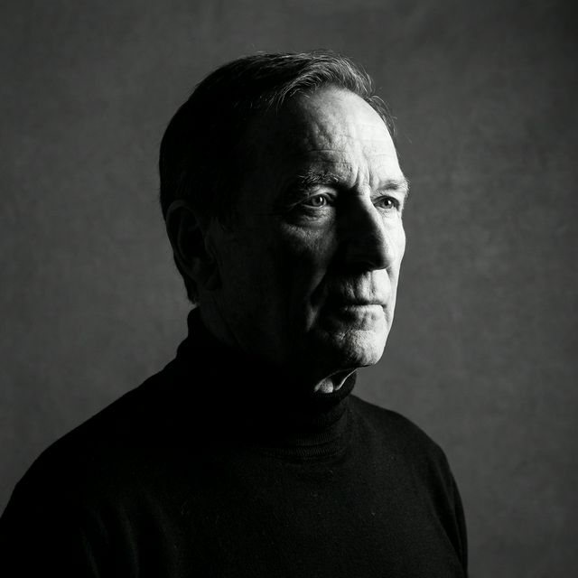

The eye
behind the lens
Photographer, wanderer, and collector of quiet moments since 2014.

Montreal, 2024The Story
I photograph what silence looks like.
I picked up a camera at nineteen because I didn't know how to say what I was feeling. A decade later, I still don't — but now I have a body of work that speaks instead.
My practice is rooted in patience. I wait for the light to change, for the street to empty, for the moment between moments. The result is work that feels still, even when the world around it isn't.
Based in Montreal, Canada. I split my time between personal projects, editorial commissions, and fine art prints sold through galleries in North America and Europe.
Philosophy
Three principles that guide every frame
Patience over speed
Great photographs aren't taken — they're waited for. I never rush a shoot. I return to locations, revisit light, and let the scene reveal itself in its own time.
Less is always more
I remove until there's nothing left to remove. Every element in the frame exists for a reason. If it doesn't serve the image, it doesn't belong.
Feeling over technique
Technical perfection means nothing if the image doesn't make you feel something. Mood, atmosphere, and emotion come first — always.
Process
How the work gets made
I shoot primarily with natural light. Most of my personal work is captured on film — Kodak Portra and Ilford HP5 — then scanned and lightly processed. For editorial and commercial projects, I work digitally with Fujifilm and Leica systems.
My post-processing is intentionally restrained. I want the image to look like what it felt like to be there — not a manufactured version of reality. Minimal retouching. No composites. No AI generation.
Journey
Milestones along the way
"Quiet Hours" solo exhibition — Galerie Nichido, Montreal
A 40-print retrospective spanning five years of street and landscape work across three continents.
World Press Photo — Honorable Mention, Nature
Recognized for the series "Still Morning" documenting endangered ecosystems in British Columbia.
Published in The New York Times Magazine
12-page editorial feature accompanying a long-form essay on solitude in modern cities.
First monograph: "The Space Between"
Published by Aperture. 180 pages of landscape and architectural photography from Patagonia to the Nordics.
Sony World Photography Awards — Finalist
Selected from 320,000 entries for the Open Competition, Architecture category.
First camera, first obsession
Bought a used Nikon FM2 at a flea market in Montreal. Haven't stopped shooting since.
Featured In
Work Together
Let's make
something lasting
Available for commissions, editorial assignments, exhibitions, and print inquiries.